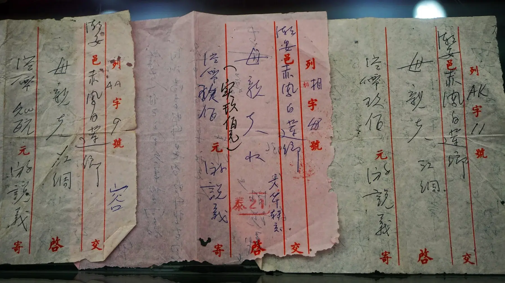
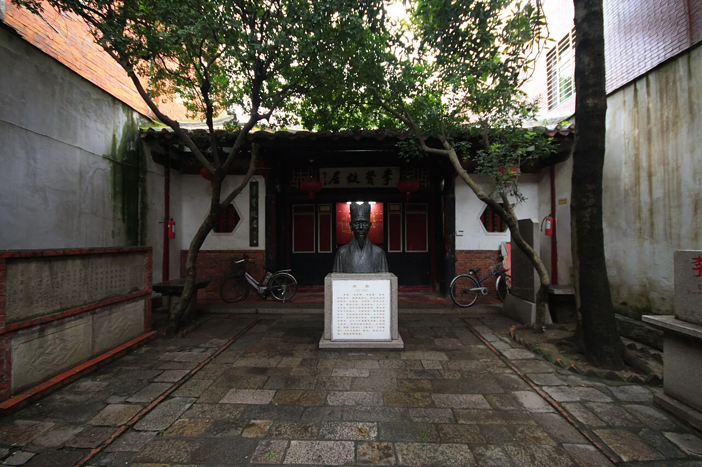
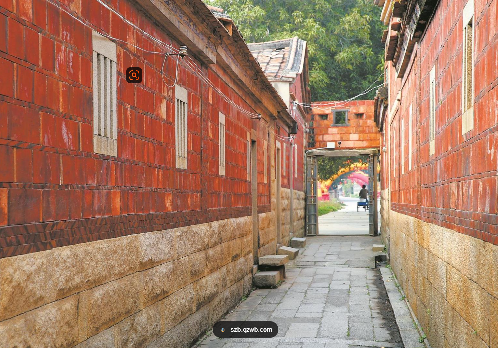
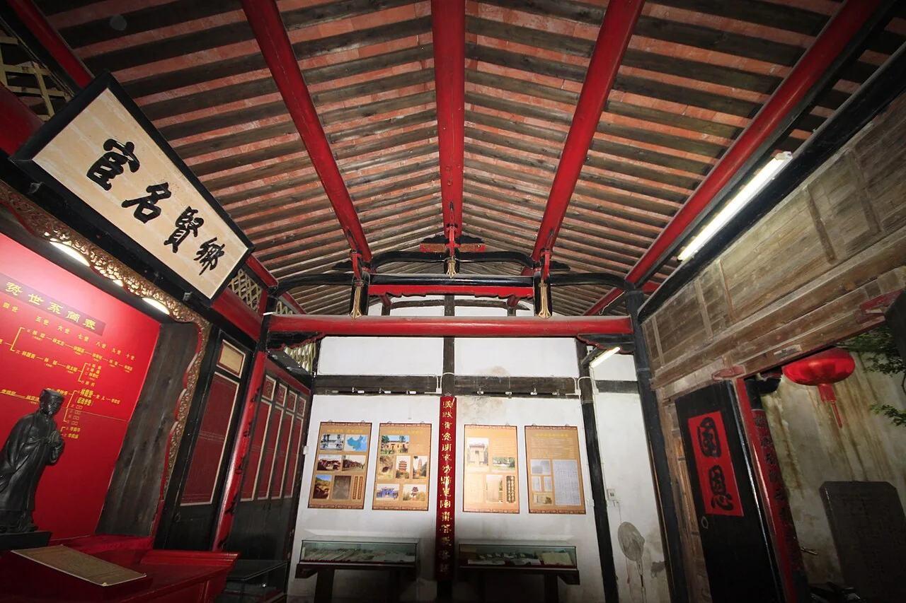
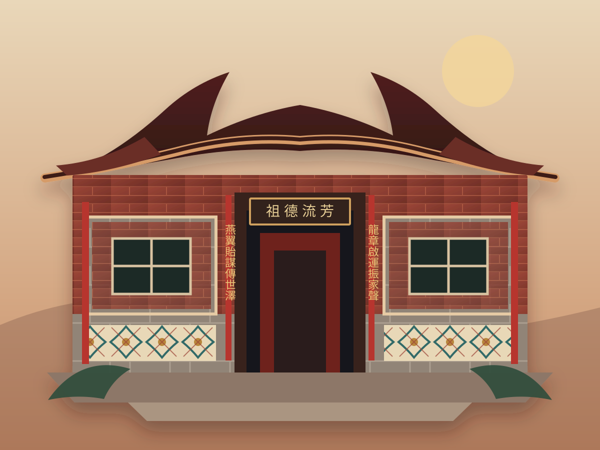
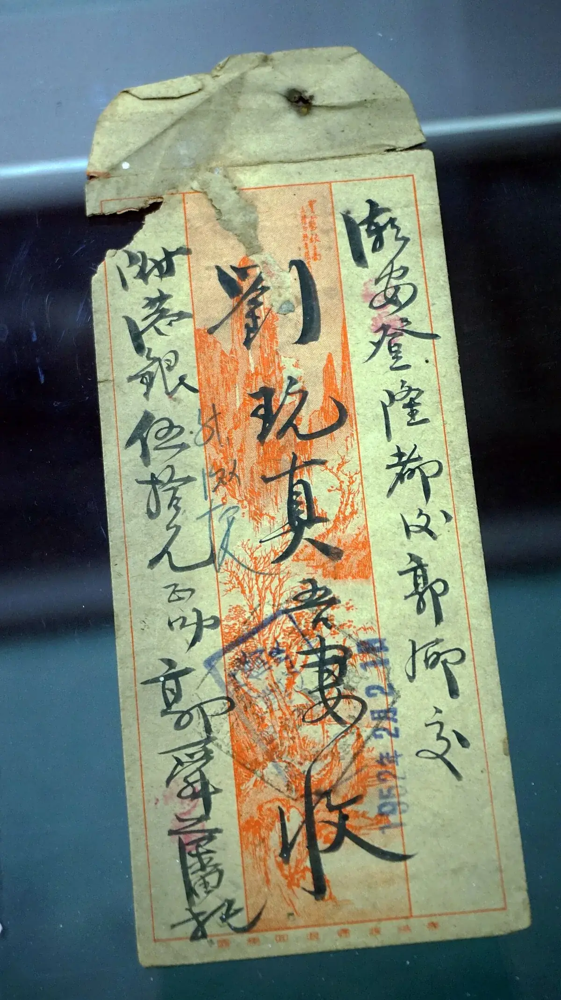

PAST · 過去
故事從這裡開始
祖厝、鄉音與僑批，留下遠行以前與跨海以後的真實記憶。
Do you still remember where the story began?你還記得，故事開始的地方嗎？
Minnan is not only where our story began. It is where the story is still being written — in old houses and new homes, in family words, living faith, shared tables, letters across the sea, and the lives of every new generation.
真實的閩南。
過去，現在，未來。
Minnan is not a scene frozen in the past. It is a living world—remembered, lived and continually renewed across villages and ports.

祖厝、鄉音與僑批，留下遠行以前與跨海以後的真實記憶。

它仍在家門、飯桌、香火與每天使用的語言裡，不只是被保存的遺產。

每一代人都會用自己的方式，重新理解、書寫並帶著閩南走向下一個港口。
If you have ever said lumpia, popiah, bihon, misua, tikoy, hopia, or kway teow, you were already carrying words from the ports of southern Fujian. Many families no longer read the characters. Many were never formally taught the language. Yet the words survived in kitchens, markets, birthdays, weddings, and New Year tables.
The pronunciation changed from port to port. The memory remained.
聲音隨港口而變，來處一直都在。
They crossed the sea with almost nothing. They carried their roots, their language, their gods, and the taste of home. When they could, they sent letters back across the water. What remains today is not only memory. It is a living inheritance.
Trace a surname to a clan hall, and a clan hall to a village in Jinjiang, Shishi, Nan’an, Hui’an, Quanzhou, Zhangzhou, or somewhere nearby.
Search your surname →Compare Manila Lannang-uè, Penang Hokkien, Singapore Hokkien, Medan Hokkien, and the speech of southern Fujian.
Open the wordbook →Má-chó͘ 媽祖 at the harbour. Koan-kong 關公 in the shop. Chheng-chúi Chó͘-su 清水祖師 from the home county.
Explore the temples →Misua for birthdays. Tikoy for New Year. Tea from Anxi. Food preserved memory long after a family forgot the road home.
Read the food stories →Qiaopi carried news, money, duty, worry, and love between a port city and an ancestral village.
See the family letters →Before many of us remember the language, we remember the house: the curve of a swallow-tail roof, the red of sun-warmed brick, the stone set between brickwork, the flower tiles by the doorway, the shaded hall, and the family altar. In the Hokkien world, architecture is not only design. It is memory made visible.
很多人還沒想起一句完整的鄉音，先想起的是房子的樣子。燕尾脊、胭脂磚、出磚入石、花磚、鳥踏、門埕與神龕。真正令人想家的，往往是祖厝裡那些熟悉的小地方。
Even those who do not know the name often recognise the rising roofline immediately — a remembered outline of southern Fujian.
Not a flat bright red, but a warm color shaped by clay, salt air, sunlight, repair, and time.
出磚入石 weaves red brick and pale stone into one wall — practical coastal masonry with an unmistakable rhythm.
Patterns beside doors, windows, halls, and thresholds gave ordinary homes color, order, and quiet celebration.
Bird-resting details, eaves, stone thresholds, door courts, carved windows, altars, and traces of daily life made a house feel inhabited.


Some houses were built with bricks.
Some were built one letter at a time.
有些祖厝以磚石建成，有些祖厝，是一封一封僑批寄回來的。
One mother tongue, many harbors. Across Southeast Asia and beyond, Hokkien communities built new homes without completely leaving the old ones behind. Choose the port closest to your family’s story.
Kinship, trade, faith, food, and language across Manila, Cebu, and ports throughout the Philippines.
A Hokkien world of streets, wet markets, kitchens, temples, and neighborhood memory.
A multilingual city with Hokkien long woven into its Chinese associations, temples, food, and family life.
A living Hokkien world shaped by northern Sumatra, trade networks, family, and local languages.
Second migrations. Third homes. The same search for remembered roots.
A qiaopi was never merely a document. It could hold a line reporting safety, money for parents and children, instructions for the household, and feelings too restrained to say directly. Distance was written into the paper — and so was the refusal to abandon home.
An open-license photograph of qiaopi addressed to a mother in Bailian village, Chao’an, recording a remittance of HK$900. The paper bears the marks of handling, routing, annotation, and use — not an abstract history, but a family transaction that survived.
Collection photographed at Chaozhou Museum. Photo: 三猎 / Wikimedia Commons, CC BY-SA 4.0. Resized and display-cropped; derivative image remains under CC BY-SA 4.0. Original file and metadata.
This qiaopi records a HK$50 remittance connected with Singapore — historically written 石叻 — and addressed to a wife in Houguo village, Chao’an. The recipient’s name dominates the worn paper: one person, one household, one waiting address.
Collection photographed at Chaozhou Museum. Photo: 三猎 / Wikimedia Commons, CC BY-SA 4.0. Resized and display-cropped; derivative image remains under CC BY-SA 4.0. Original file and metadata.Archive note: These two openly licensed examples come from Chao’an and represent the wider qiaopi tradition of China’s southeastern coast. minnan.org will distinguish each document’s actual origin and will prioritize clearly sourced Fujian, Quanzhou, Jinjiang, Xiamen, Zhangzhou, and Southeast Asian materials as the archive grows. We will not label a Chaoshan document as Minnan.